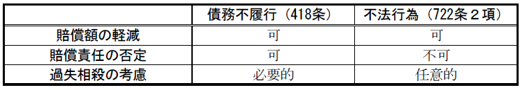

第７編 不法行為等
第２章 不当利得
第１節 一般の不当利得
不当利得とは、法律上の原因なく他人の財産又は労務によって得た利益をいい、不当利得制度とは、不当利得の受益者に、その利益を返還する義務を負わせた制度のことをいう。
①他人の財産又は労務によって利益を受けたこと（受益）、②他人に損失を及ぼしたこと、③受益と損失の間に因果関係があること、④法律上の原因がないこと、が必要である。
1. 受益・損失・因果関係（要件①～③）
「受益」・「損失」とは、財産の増減をいうので、同一の事象を受益者又は損失者からみているにすぎない。よって、「受益」と「損失」が認められれば、当然に因果関係が認められることになる
(1) 受益（要件①）
受益には、財産が積極的に増加した場合（積極的利得）と本来生ずるはずであった財産の減少を免れた場合（消極的利得）が含まれる。
(2) 損失（要件②）
損失には、積極的に既存の財産が減少する場合だけでなく、増加するはずであった財産が増加しなかった場合も含まれる。
(3) 因果関係（要件③）
原則として、受益と損失の間に直接の因果関係が必要である（大判大８.10.20）。
2. 法律上の原因がないこと（要件④）
｢法律上の原因｣とは、正義公平の観念上、正当とされる原因をいう（大判昭11.１.17）。
不当利得の成立により、利得者は損失者に対して利得返還義務を負う。
1. 返還義務の内容
不当利得の返還は現物返還が原則であり、それが不可能な場合に価額賠償となる。
2. 善意の受益者の返還の範囲
｢利益の存する限度｣（＝利益がそのまま、あるいは形を変えて残っていることを意味する。現存利益）で、返還義務を負う（703条）。
3. 悪意の受益者の返還の範囲
(1) 全部の利得の返還
「受けた利益」全部に「利息を付して」返還しなければならない（704条前段）。利息の利率は法定利率による。
(2) 損害賠償責任
利益・利息を返還してもなお損失者に損害があるときは、受益者は「その賠償の責任を負う」（704条後段）。
例えば、転売予定があったにもかかわらず不当利得されたゆえに適時に転売できなくて損失を受けた損失者には、その損害を賠償しなければならない。
第２節 不当利得の特則
1. 意義・趣旨
非債弁済（広義）とは、債務がないのに弁済としてなされた給付をいう。
本来ならば、703条により不当利得として返還請求できるはずであるが、法は、705条以下で、３つの特則（①狭義の非債弁済（債務の不存在を知ってした弁済。705条）、②期限前の弁済（706条）、③他人の債務の弁済（707条））を設けてこれを制限した。
弁済者が債務の不存在につき悪意の場合に、不当利得の成立を制限したのが705条の狭義の非債弁済である。
2. 要件
①債務の不存在、②弁済として給付がなされたこと、③弁済者が弁済時に債務の不存在を知っていたこと、が必要である。
3. 効果
弁済者は、不当利得返還請求ができない。
期限到来前に債務の弁済をしても、債務が存在している以上、その弁済は法律上の原因を欠くものとはいえない。従って、債務者は給付したものの返還を請求することはできず、不当利得は成立しない（706条本文）。
しかし、弁済者が、錯誤によって弁済した場合には、弁済者が弁済期までの運用益を失ったといえることから、債権者はその得た利子などの利得を返還しなければならない（706条ただし書）。
1. 意義
他人の債務であるものを自己の債務と誤信して弁済をした場合には、他人のために弁済をしたのではないから、有効な第三者の弁済（474条）とはならない。従って、債権も消滅せず、債権者は不当に利得することになる。そのため、弁済者は、不当利得の返還請求権を有することになるとも思える。
しかし、この原則を貫くと、債権者が第三者の弁済によって債権が消滅したものと誤信したために不測の損害を被るおそれがある。そこで、民法は707条１項によって、債権者が、善意で、債権証書を滅失させ若しくは損傷し、担保を放棄し、又は時効によってその債権を失った場合には、債権者を保護するために、弁済者に返還請求権を認めないこととした。
なお、「証書を滅失させ若しくは損傷し」には、有形的に証書を破棄した場合に限らず、証書を債務者又は弁済者に返還した場合のように、債権者が証書を自由に立証方法に供することができなくなることを含む（最判昭53.11.２）。
2. 効果
707条１項適用の結果、弁済者が債権者に対して不当利得の返還請求権を失った場合には、債権は消滅し、債権者は給付されたものを正当に保有できることになる。従って、この場合には、弁済者は債務者に対して求償権を行使することができる（707条２項）。
1. 意義・趣旨
不法な原因のために給付をした者はその給付したものにつき不当利得返還請求をすることができない。この法律関係を「不法原因給付」という（708条本文）。
すなわち、給付原因が不法のために無効の場合、その給付は「法律上の原因」を欠くことにはなるが、かかる場合に不当利得返還請求を認めると、自ら法の理念に反する行為をした者が法の保護を受けることになってしまい、正義に反する。従って、返還請求を認めないものとしたのである（クリーンハンズの原則と同趣旨）。
本条の趣旨がクリーンハンズの原則にある以上、不法な原因がもっぱら受益者にあるような場合には、給付者に不当利得返還請求権を認めても、その趣旨に反しない。そこで、本条ただし書はこのような場合を例外とした。
2. 要件
(1) 「不法」の意味
90条の公序良俗違反に限る（最判昭37.３.８・通説）。
(2) 「原因」
本条にいう不法な｢原因｣とは、その給付によって企図された目的のことであり、給付内容自体が不法でなくてもよい。給付の動機が不法な場合も当事者がこれを知っている場合には、ここにいう原因となり得る。
密航を勧誘し、密航の資金に供することを知って金員を貸与した事件について、708条はその給付行為自体が不法の場合に限らず不法事項が給付の目的若しくは縁由たる場合を含むとして不法原因給付の成立を認めた（大判大５.６.１）。
(3) 「給付」
「給付」とは回復請求権者の自由な意思に基づいてなされた財産的価値のある出捐をいう。
「給付」をしたといえるためには、受益者に終局的利益を与えるものでなければならない（判例・通説）。未登記不動産については引渡しで足りるが、既登記不動産については登記が必要である（最判昭46.10.28）。
3. 効果
給付したものの返還を請求することができない。
第３章 不法行為
第１節 意義
不法行為とは、他人の権利又は法律上保護される利益を不法に侵害し、これによって損害を与える行為をいう。
加害者の故意又は過失を要件として、加害者自らが損害賠償責任を負う場合を一般不法行為といい、その他の場合を特殊の不法行為という。
1. 不法行為責任と債務不履行責任との相違点
(1) 立証責任（挙証責任）
不法行為責任では、被害者の方で加害者に故意・過失のあったことを立証する責任を負う。
債務不履行責任では、債務者（加害者）の方で、自分に故意・過失がないことを立証しない限り、責任を免れることができない。
(2) 消滅時効
不法行為責任には、短期３年・長期20年の消滅時効期間が定められている（724条）。ただし、人の生命又は身体を害する不法行為責任の短期の消滅時効期間は５年となる（724条の２）。
債務不履行責任における消滅時効期間は短期５年・長期10年とされている（166条１項）。ただし、人の生命又は身体の侵害による債務不履行責任の長期の消滅時効期間は20年となる（167条）。これにより、人の生命又は身体の侵害による損害賠償請求権については、その原因が債務不履行であっても、不法行為であっても、主観的起算点からの時効期間は５年、客観的起算点からの時効期間は20年ということになる。
2. 請求権競合の問題
Ｑ ある加害行為が、債務不履行の要件と不法行為の要件との両者を充足する場合に、両責任の関係が問題となる。
→ 請求権競合説（最判昭38.11.５・多数説）
債務不履行による損害賠償請求権と、不法行為による損害賠償請求権とが競合（並存）して発生する。
（理由）
①両責任はそれぞれに別個の要件と効果が定められている異なった制度である。
②両者の間に自由な選択を認めることが被害者にとって有利である。
第２節 一般不法行為の成立要件
一般不法行為の成立には、①故意・過失により、②他人の権利又は法律上保護される利益を違法に侵害し、③損害が発生し、④侵害行為と損害の発生との間に因果関係があること、が必要である。また、その他に、行為者の責任能力が必要である。
1. 故意
：自己の行為により権利侵害又は違法な事実が発生することを認識・認容する心理
2. 過失
：損害発生の予見可能性があるのに、これを回避する行為義務（結果回避義務）を怠ったこと
1. 被侵害利益の種類
(1) 物権的権利
(2) 債権的権利
(3) 人格的権利
生命、身体・自由、名誉等の人格的利益も不法行為法による保護の対象となる（710条）。
ex. 名誉毀損、プライバシー権
2. 違法性阻却事由
以上の権利侵害が存する場合には通常その行為は違法と評価されるが、他の事由が加わることによって違法性がないとされる場合があり、これを違法性阻却事由という。この事由の立証責任は、加害者が負担する。
(1) 正当防衛（720条１項本文）
(2) 緊急避難（720条２項）
(3) その他の違法性阻却事由
正当防衛、緊急避難以外にも、判例などで違法性阻却事由として認められているものがある。
ex.自力救済が認められる場合（最判40.12.7）、正当業務行為、被害者の承諾がある場合等
1. 損害の意義
損害は財産的損害に限らず、精神的損害も含む。
2. 挙証責任
損害発生の挙証責任は、被害者が負う。
3. 損害賠償請求をすることができる時期
損害賠償請求権が発生する時期は、原則として、現実に損害が発生した時である。
例外として、損害の発生及び損害額が予測にとどまる段階においても、損害賠償の請求が認められる場合がある。例えば、抵当権侵害の場合においては、抵当権の実行以前においても、抵当物の損傷のため弁済を受けられないことによる損害額の計算は必ずしも不可能ではないので、抵当債権の弁済期後ならば、抵当権実行前でも賠償請求権の行使が認められる（大判昭７.５.27）。
1. 因果関係の判断基準
相当因果関係説（416条類推適用説。大連判大15.５.22〔富喜丸事件〕・通説）。
→ 416条は損害賠償に関する通則であり、被害者の保護及び通常加害者の予見できない損害の賠償を認めるのは酷という同条の趣旨は不法行為にも妥当する。
2. 挙証責任
因果関係も原則として被害者側が挙証責任を負う。
1. 意義
損害賠償責任を負うための前提として、行為者が「自己の行為の責任を弁識するに足りる知能」（712条）を具備していることが必要とされる。これが「責任能力」と呼ばれるものである。
2. 未成年者の責任能力
未成年者が加害行為をした場合に、「自己の行為の責任を弁識するに足りる知能を備えていなかったときは、その行為について賠償の責任を負わない」（712条）。
一般の行為能力（５条）より低くてよいとされるが、一律に年齢だけで決められるものでないため、何歳で責任能力ありと一概にはいえないが、だいたい小学校を卒業する12歳ぐらいが基準になるとされている。
判例には、11歳11か月の少年に認めるもの（大判大４.５.12）と、12歳２か月の少年に認めなかったもの（大判大６.４.30）がある。
3. 精神上の障害により自己の行為の責任を弁識する能力を欠く状態にある者の責任（713条）
原則として、精神上の障害により自己の行為の責任を弁識する能力を欠く状態にある間に他人に損害を加えた者は、その賠償の責任を負わない（713条）。
「自己の行為の責任を弁識する能力を欠く状態」とは、自分の行為の結果について法律上何らかの責任が生じることを弁識できる能力が欠けている状態をいう。不法行為を行ったときに「自己の行為の責任を弁識する能力を欠く状態」であればよい。
第３節 不法行為の効果
Ⅰ 総説
不法行為に基づく損害賠償請求が認められる（709条）。
損害の補填の方法は、大別して、損害を金銭に算定する場合と、損害が発生する以前の状態の回復を求める方法（原状回復）の２つがある。
原則：金銭賠償（金銭賠償の原則。722条１項、417条）
例外：原状回復の方法（損害賠償の方法について当事者に特約がある場合、又は法律に特別の規定がある場合）
なお、名誉毀損について、金銭賠償だけでは名誉を回復するのに十分でない場合が多いとの考えに基づいて、裁判所は「名誉を回復するのに適当な処分を命ずることができる」（723条）。
Ⅱ 金銭賠償の範囲と額の算定
1. 財産的損害
(1) 所有物が滅失した場合の賠償額
原則としてその物の交換価値であり、損傷された場合には、修理費用や修理期間中の使用不能による休業損害等が賠償されなければならない。
(2) 身体傷害の場合の賠償額
治療費、入院費等の現実に生じた損害（積極的損害）と、休業による損失、後遺症による逸失利益（不法行為がなければ増加したはずの財産を取得できなくなったことによって生じる損害）等の消極的損害の賠償が認められる。
(3) 生命侵害の場合の賠償額
生きていれば得られたであろう収入（逸失利益）の賠償が認められる。
2. 非財産的損害（710条）
精神的損害に対する損害賠償を慰謝料という。慰謝料の場合、非財産的損害を金銭に換算することはその性質上困難であるから、その算定では、財産的損害のように、算定の基礎となる具体的資料や計数的根拠を示す必要はなく、諸般の事情を考慮して、妥当な額を判定すれば足りるとされる。
1. 債務不履行における過失相殺（418条）
(1) 意義
：債務不履行又はこれによる損害の発生若しくは拡大に関し、債権者にも過失があったときは、裁判所が、賠償の責任及び金額を定めるにつき、これを考慮すること
自己の不注意に基づく損害を他人に転嫁することは公平の理念に反することから認められる。
(2) 要件
債務不履行に関し、債権者に過失があること。
不履行の原因が債権者の過失であった場合だけでなく、債務不履行後に債権者の過失により損害が発生・拡大したような場合も含む。
(3) 効果
賠償額が減額される。
裁判所は債権者の過失を認定した以上必ず考慮しなければならない。
賠償責任自体を否定することもできる。
2. 不法行為における過失相殺（722条２項）
(2) 趣旨
(a) 公平の理念
被害者にも過失があり、それが損害に影響を与えている場合においても、加害者のみに全損害の賠償をさせることは公平に反する。
(b) 便宜性の観点
加害者が全損害を賠償した後に、被害者が、自分の過失部分につき加害者に賠償すると、求償関係が複雑になる。
(3) 被害者側の過失
(a) 被害者側の過失のしん酌の可否
Ｑ 賠償を請求する被害者自身に過失があれば、過失相殺をすることができるが、被害者以外に過失がある場合にも過失相殺をすることができるか。
→ 被害者本人の過失のみではなく、被害者と身分上又は生活関係上一体をなすとみられる関係にある者の過失も、被害者側の過失として、過失相殺の対象になる（最判昭51.３.25・通説）。
(b) 被害者側の過失の具体例
ⅰ 被害者側の過失と認められたもの
①事故発生についての幼児の親の監督上の過失（最判昭34.11.26）
②夫の運転する被害自動車に同乗していた妻が負傷した場合の夫の過失（当該夫婦の婚姻関係が既に破綻に瀕しているなど特段の事情のない場合に限る。最判昭51.３.25）
③被害自動車を運転していた被害者の従業員の過失（大判大９.６.15）
ⅱ 被害者側の過失と認められなかったもの
①被害を受けた幼児を引率していた保育園の保母の監護上の過失（最判昭42.６.27）
②被害自動車の運転者が同乗中の被害者と同じ職場に勤務する同僚である場合（最判昭56.２.17）
(4) 過失相殺の類推適用
ⅰ 被害者の体質的素因、心因的要因などが損害の拡大に寄与した場合、損害額の算定に際し、公平上被害者の事情を考慮して賠償額の減額が認められる（身体に対する加害行為によって生じたむち打ち症について被害者の心的要因が寄与したとされた場合につき最判昭63.４.21、加害行為前から存在した被害者の疾患も原因となって損害が発生した場合につき最判平４.６.25）。
ⅱ 被害者が平均的な体格ないし通常の体質と異なる身体的特徴（首が長い）を有し、これが加害行為と競合して傷害を発生させ又は損害の拡大に寄与した場合であっても、被害者の身体的特徴が疾患に当たらないときは、特段の事情がない限り、損害賠償額の算定に際し考慮すべきではない（最判平８.10.29）。
ⅲ 長時間の残業により労働者がうつ病にかかって自殺した場合に成立する使用者責任について、労働者の性格が通常想定される範囲を外れない限り、その性格を心因的要因として考慮することはできず、また、その労働者と同居する両親がその者の生活の改善措置をとらなかったことは過失相殺のしん酌事由にはならない（最判平12.３.24）。
【過失相殺の比較】

3. 損益相殺
(1) 意義
本来、賠償すべき額は、被害者の受けた損害額のすべてである。しかし、例えば、交通事故において自賠責保険金を受け取った場合のように、一方で損害を受けたが、他方でそれにより利益を得る場合がある。このような場合に公平の観点から、この利益を損害額から控除して加害者の賠償すべき額を決定する法理が損益相殺である（最大判平５.３.24）。
(2) 損益相殺としての控除が認められる例
①不法行為による死亡者の生活費
②退職年金の受給者死亡の場合に、当該損害賠償請求権者に対して給付されることが確定した遺族年金（最大判平５.３.24）
③自動車事故の損害保険金（最判平５.４.６）
(3) 損益相殺としての控除が認められない例
①死亡によって支払われた生命保険金（最判昭39.９.25）
②死亡した幼児の養育費（最判昭53.10.20）
③家屋焼失によって支払われた火災保険金（最判昭50.１.31）
4. 過失相殺と損益相殺の適用関係
過失相殺と損益相殺の両方が適用される場合、過失相殺を先に行い損害賠償額を確定した上で、被害者が得た利益を損益相殺によって控除する算定方法を採用した（最判平元.４.11）。
5. 不法行為とは別の原因で被害者が死亡した場合
①交通事故の被害者が第二の交通事故で死亡した場合、第一の事故の後遺障害による損害賠償額の算定については、原則として死亡後の生活費を控除することはできない（最判平8.5.31）。また、就労可能期間の算定上その死亡の事実を考慮すべきでない（最判平8.4.25）。
②交通事故により介護を要する状態となった被害者が、その後別の原因で死亡した場合、死亡後に要したであろう介護費用を損害賠償請求することはできない（最判平11.12.20）。
Ⅲ 損害賠償請求権者
不法行為によって直接に被害を受けた本人は、精神的損害であれ、財産的損害であれ、当然損害賠償請求権を有する。
1. 被害者の死亡と損害賠償請求権の相続
被害者の生前に既に発生していた損害賠償請求権は、金銭債権だから相続の対象となる。
Ｑ 被害者が即死した場合、損害賠償請求権の相続が認められるか。死者には権利能力がないため、損害賠償請求権の帰属主体が存在せず、その相続ということは考えられないのではないか問題となる。
→ 肯定説（大判大15.２.16）
（理由）
①被害者が受傷後しばらくして死亡したら損害賠償請求権が相続可能なのに、即死の場合にはこれができないのでは均衡を欠く。
②被害者が即死した場合でも、傷害と死亡との間に観念的には時間の間隔があるから、被害者は受傷の瞬間に賠償請求権を取得し、相続人は、被害者の死亡によってこの権利を相続する。
2. 慰謝料請求権の相続性
Ｑ 被害者死亡の場合における財産的損害について相続を認めるとしても、慰謝料請求権は一身専属的な権利とされる。そこで、慰謝料請求権は相続できないのではないかが問題となる。
→ 肯定説（最大判昭42.11.１）
損害の発生と同時に慰謝料請求権を取得し、当該請求権を放棄したものと解し得る特別の事情がない限り、同人が生前に請求の意思を表明しなくても当然に相続される。
1. 意義
他人の生命を侵害した者は、被害者の父母、配偶者及び子に対しては、その財産権が侵害されなかった場合においても、損害の賠償をしなければならない（711条）。
生命侵害を受けた者と一定の親族関係にある者が、自己とその者との間の親族関係を侵害されたことを理由として、損害賠償を請求することができる旨を定めた規定である。
2. 慰謝料請求権者の範囲
①父母、配偶者及び子（711条）
②内縁の妻、未認知の事実上の子、711条の近親者がいない場合の祖父母と孫や兄弟姉妹など（最判昭49.12.17等）
→ これらの者は、711条所定の者と同様に精神的損害を受けることが通常と考えられるからである。
3. 近親者の慰謝料請求は、死亡の場合に限られるのか。
不法行為により身体に傷害を受けた者の母親が、そのために被害者の生命侵害の場合にも比肩すべき精神上の苦痛を受けたときは、709条、710条に基づいて自己の権利として慰謝料を請求することができる（最判昭33.８.５・通説）。
胎児は原則として権利能力がない（３条１項）が、不法行為に基づく損害賠償請求権については、胎児は既に生まれたものとみなす。
Ⅳ 損害賠償請求権の期間の制限
不法行為の場合、あまり時間が経つと加害者の責任の有無が不明確になり証拠の収集・保全や損害額の算定が困難になる。また、被害者の感情も沈静化する。
そこで、724条は損害賠償について特に通常と異なる時効期間を設けている。
1. 「損害…を知った時」
被害者が損害発生を現実に知ること、及びそれが不法行為により生じたことを知る必要がある。
判例は、損害を知るとは、被害者が損害の発生を現実に認識したときをいうとする（最判平14.１.29）。
2. 「加害者を知った時」
被害者が不法行為の当時加害者の住所・氏名を的確に知らず、しかもこれに対する賠償請求権を行使することが事実上不可能な場合には、その状況がやみ、被害者が加害者の住所・氏名を確認したとき初めて「加害者を知った」といえる（最判昭48.11.16）。